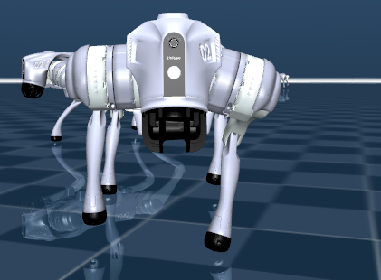
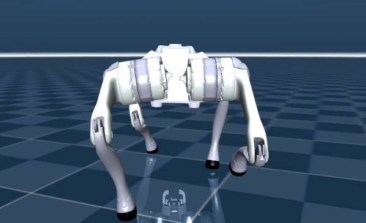

Teaching a Quadruped Robot to Walk, Map, and Explore


Project Overview
I'm developing a quadruped robot to explore environments that may be unsafe for people. I trained a walking policy in MuJoCo using reinforcement learning, and the robot now walks forward in simulation. Next, I plan to add mapping and autonomous exploration.
Key Features
- MuJoCo quadruped simulation
- PPO walking policy trained with JAX
- Gait evaluation using speed, stability, and foot-contact data
What I Learned
I started learning MuJoCo and reinforcement learning by configuring the simulation and writing reward and evaluation functions in Python. When a policy tracked speed but favored one diagonal pair, I learned to check foot contact and balance before treating the gait as reliable.